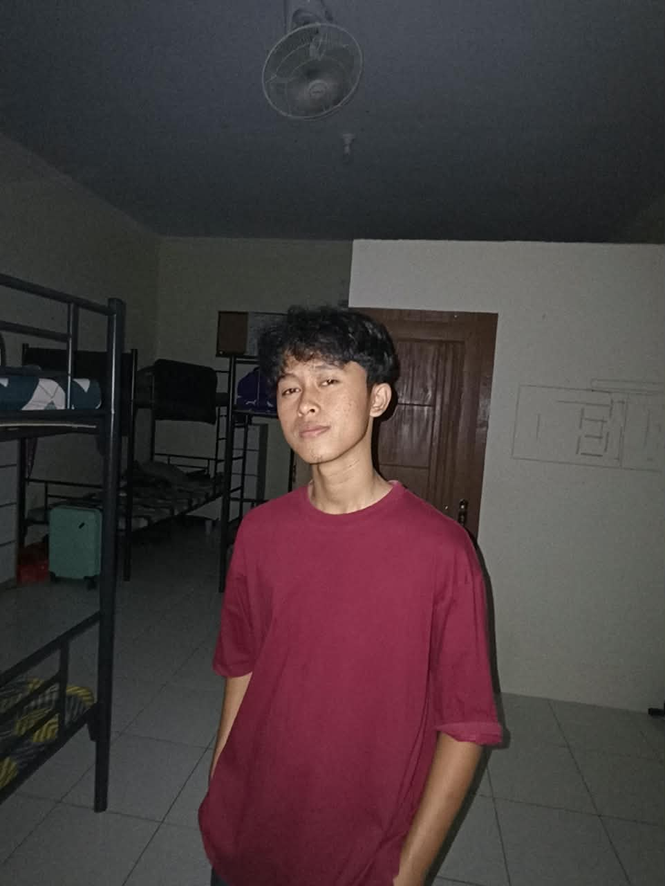

|

Labib Abdul Manan
Pelajar • Banjarnegara
|
SELAMAT DATANG DI WEBSITE LABIBSaya ucapkan terima kasih atas kunjungan Anda ke website ini. Di sini Anda dapat melihat profil data diri serta kegiatan yang saya lakukan, beserta perenungan filosofis di bawah ini. Risalah Kesunyian dan Sang PenciptaMaka turunlah manusia dari bukit-bukit keheningan, dan ia berseru kepada jiwanya yang dahaga: "Wahai jiwa yang tertidur dalam debu prasangka! Apakah engkau mengira dirimu adalah raja atas waktu, padahal engkau hanyalah musafir yang meniti bayang-bayang?"Sesungguhnya, langit tidak diciptakan tanpa ukuran, dan bumi tidak dibentangkan tanpa kehendak. Sebagaimana firman Sang Pencipta Kebenaran:
"Dan tidaklah Aku menciptakan jin dan manusia melainkan agar mereka beribadah kepada-Ku."
(QS. Az-Zariyat: 56) Manusia bertarung melawan bayangannya sendiri, meraba-raba dalam kegelapan duniawi, padahal Cahaya di atas Cahaya senantiasa memanggil dari kedalaman yang paling sunyi. Maka berjalanlah di atas muka bumi ini sebagai seorang asing, sebagaimana sabda Sang Nabi:
"Jadilah engkau di dunia ini seakan-akan orang asing atau seorang pengembara."
(HR. Bukhari) Bukan kekekalan di dunia yang dicari oleh mereka yang berakal, melainkan kepasrahan yang sempurna kepada Yang Maha Memiliki Jiwa. Barangsiapa mengenal kerendahan dirinya di hadapan Sang Khalik, maka ia telah menemukan ketinggian derajat yang sejati. |